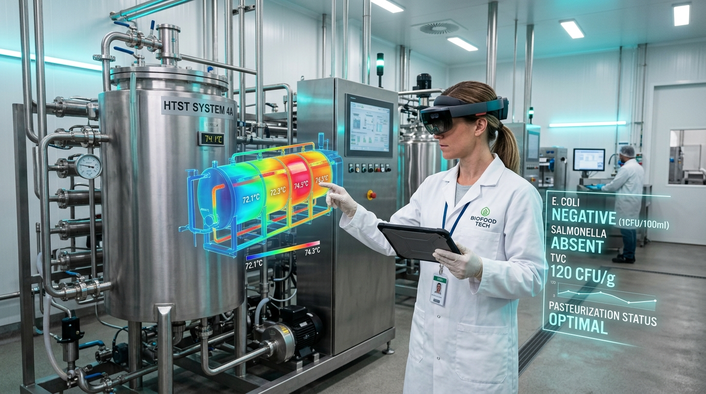
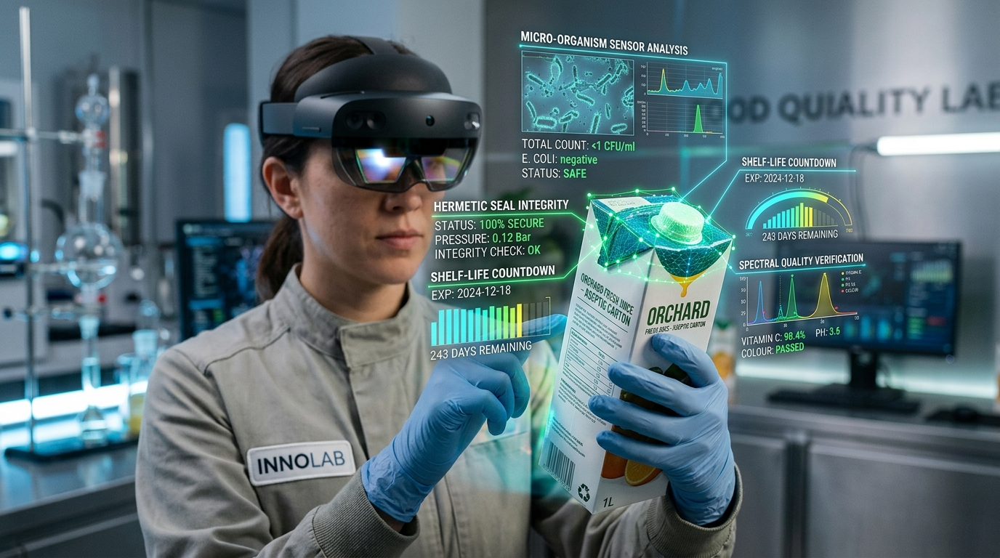
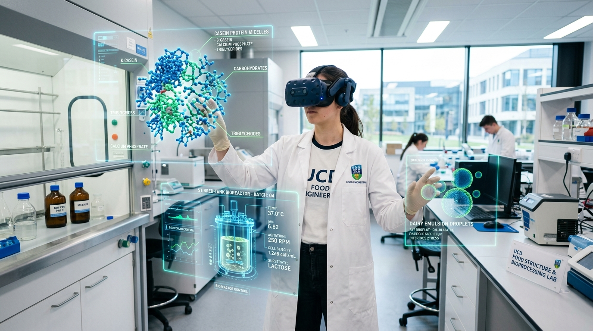

Realidades Inmersivas en la Ingeniería de Alimentos
Descubre cómo la Realidad Aumentada (RA), Realidad Virtual (RV) y Realidad Mixta (RM) transforman las plantas industriales, los gemelos digitales térmicos y la formación de futuros ingenieros sin desperdicio de materia prima.
-45%
Reducción en mermas por entrenamiento en laboratorio virtual
99.9%
Conformidad microbiológica validada con Gemelos Digitales
0 Riesgos
Seguridad absoluta en simulación de vapor y presión

El Espectro de la Realidad Extendida (XR)
Cada tecnología inmersiva tiene un papel específico y complementario dentro de la industria agroalimentaria y la academia.
Superposición de Datos en Entornos Reales
Proyecta capas de información analítica (temperaturas de intercambiadores, curvas de letalidad y estatus HACCP) directamente sobre las máquinas y empaques físicos del operador.
- Inspección visual de sellado y lote en línea
- Guías paso a paso para sanitización CIP
- Lectura de sensores IoT mediante códigos QR o tags NFC
Inmersión Total en Plantas Virtuales
Aísla los sentidos para sumergir al estudiante o profesional en un gemelo 3D de alta fidelidad: calderas de vapor a alta presión, cámaras frigoríficas o plantas asépticas completas.
- Entrenamiento en emergencias y fuga de amoníaco
- Exploración molecular 3D de micelas de caseína
- Operación virtual de autoclaves industriales sin riesgo
Interacción Oclusión-Mundo en Tiempo Real
Fusiona objetos físicos y digitales donde los hologramas pueden anclarse y responder a la geometría espacial del laboratorio, permitiendo manipular válvulas virtuales sobre tuberías físicas.
- Auditorías con anclaje espacial de reportes HACCP
- Manipulación gestual de biorreactores piloto
- Tele-asistencia remota entre planta y expertos externos
El Ingeniero de Alimentos en la Era Inmersiva
En la vida profesional, la Realidad Extendida deja de ser una novedad visual y se convierte en una herramienta decisiva para garantizar la inocuidad alimentaria, reducir paradas no programadas y validar balances de materia y energía.
Gemelos Digitales Térmicos (Digital Twins)
Monitoreo holográfico de gradientes de temperatura en pasteurizadores tubulares y de placas para prevenir sub-procesamiento y destrucción de valor nutricional.
Inspección Aséptica y Control de Calidad
Verificación visual aumentada de la hermeticidad del termosellado en envases multicapa (Tetra Pak), detectando microfugas antes de la distribución masiva.
Mantenimiento Higiénico Predictivo
Los técnicos visualizan diagramas de flujo de fluidos, presiones de bombas y ciclos de lavado CIP (Cleaning In Place) sin abrir equipos en zonas estériles.

Aprender Ingeniería sin Barreras ni Desperdicio
Como estudiante de ingeniería de alimentos, la Realidad Extendida democratiza el acceso a laboratorios y plantas piloto complejas desde cualquier lugar, permitiendo equivocarse y aprender sin peligro.
Cero Mermas de Materia Prima
Simular corridas enteras de fermentación, ultrafiltración o deshidratación por aspersión sin desechar litros de leche, fruta o reactivos costosos.
Entrenamiento de Alto Riesgo 100% Seguro
Manipulación didáctica de vapor vivo a 4 bar, calderas, prensas y autoclaves donde un error operativo no ocasiona quemaduras ni accidentes físicos.
Microbiología & Química Molecular en 3D
Ver en escala macromolecular cómo interactúan las proteínas de suero, cómo se desestabiliza una emulsión o cómo el calor desnaturaliza el ADN bacteriano.

Calculadora de Cinética Térmica & Gemelos Virtuales
Determina en tiempo real el valor de letalidad acumulada ($F_0$), el nuevo valor $D_T$ a la temperatura de operación y el número de reducciones logarítmicas alcanzadas para alimentar el gemelo digital en RA.
Diagnóstico del Gemelo
Tratamiento ÓptimoPARÁMETROS ASÉPTICOS CONFIRMADOS: Esterilidad comercial garantizada. Balance organoléptico y nutricional ideal. Gemelo digital listo para transferir receta al PLC de planta.
Inspector XR: Auditoría de Calidad en Línea
Ponte en la piel de un Ingeniero de Alimentos usando visor de Realidad Aumentada sobre la línea de envasado continuo. Analiza los datos holográficos de cada lote y toma decisiones críticas antes de que termine el tiempo.
Arquitectura Tecnológica del Proyecto
Construido con estándares web modernos, modularidad en carpeta assets/ y conexión con librerías de cálculo científico.
¿Por qué Python en el ecosistema XR de Alimentos?
Aunque la interfaz corre en el navegador web con HTML5/CSS/JS, el backend de modelado de gemelos digitales utiliza Python (con bibliotecas como NumPy, SciPy y OpenCV) para computar las ecuaciones diferenciales de transferencia de calor por convección forzada en intercambiadores de calor y ejecutar los algoritmos de visión artificial que alimentan las gafas de Realidad Aumentada.